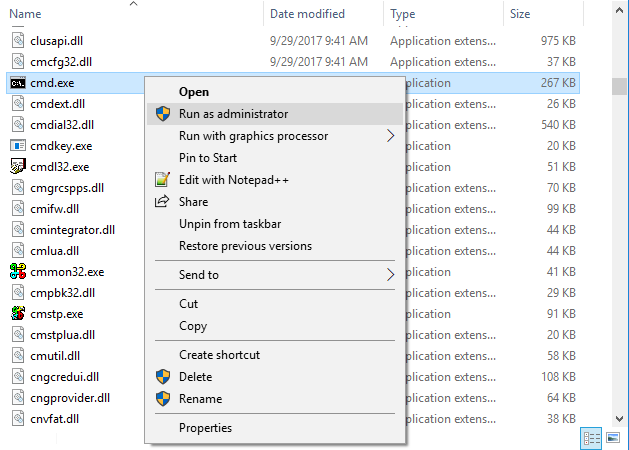
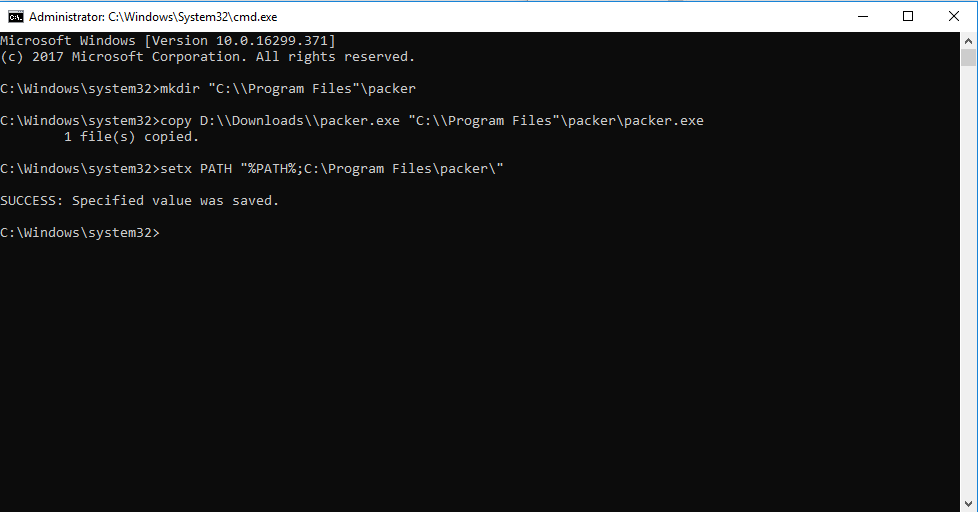

Tags: Windows Installation
Estimated time: 20 minutes
Difficulty: Easy
Operating Systems: Windows 7 and Up
Tools Used: cmd.exe
Project BrightSun needs to work. Go to the download pages for VirtualBox, Vagrant, and Packer.
Download the VirtualBox and Vagrant installers. For Packer, you should download a .zip file. Open the file and extract packer.exe to a directory you can remember.VirtualBox is installed in the same directory as Project BrightSun. Otherwise, you will get errors when trying to build new machines.
packer.exe is the application itself. As such, we need to move it to the "Program Files" directory and then tell Windows where it is so that packer can be accessed from the command line. We're going to do all of this from the Windows command line in order to learn cmd.exe basics.
Open an Administrator session of command prompt. This can be done by navigating to "C:\Windows\System32". Scroll down until you find cmd.exe, right-click, and select "Run as administrator".

We are now going to make a directory within "Program Files" for packer. Type mkdir "C:\\Program Files"\packer and click enter. "mkdir" tells command prompt to make a directory at the path we specified. We now need to move packer.exe to the directory we made. This can be done by typing copy PATH/TO/PACKER.EXE "C:\\Program Files"\\packer.exe into the command prompt. The "copy" command will a move a file from the first filepath specified to the second filepath. In the example shown below, you can see that I copied packer.exe from my Downloads directory to the packer folder we made earlier.
Finally, we need to add packer.exe to something called the "Path". In Windows, when a command is run from the command prompt, the "Path" is searched for files and directories that could contain the command. "Project BrightSun" needs to be able to call packer from command prompt, so it needs to be added to the Path. This can be done by typing setx PATH "%PATH%;PATH/TO/PACKER/DIRECTORY/. This command is a little complicated. setx allows you to set system variables such as PATH permanently. The second parameter it takes in is the variable we are setting, the PATH in this case. The third parameter is what we are setting it to.
Surrounding PATH with percentage signs (%PATH%) in the third parameter inserts the current path. From there, we add a new PATH variable called PATH/TO/PACKER/DIRECTORY/. Note that it's a path to the directory, NOT to packer.exe. An example of all the commands can be seen below.

Tags: Windows Active Directory
Estimated time: 1 hour
Difficulty: Easy
Operating Systems: Windows Server 2008 R2 Server Core
Tools Used: cmd.exe, netsh, dism, dcpromo, and dsquery/mod
.zip file. Launch an Administrator Powershell prompt and navigate to the folder you unzipped it to.Internal Network will place all machines on their own isolated virtual LAN network, but still allow them to communicate with each other.
NAT or Bridged.
Windows Server 2008 R2 Enterprise (Server Core Edition) when prompted for which Windows version to install.
dism /online /enable-feature /featurename:"NetFx2-ServerCore" dism /online /enable-feature /featurename:"NetFx3-ServerCore" dism /online /enable-feature /featurename:"DirectoryServices-DomainController-ServerFoundation" dism /online /enable-feature /featurename:"DirectoryServices-ADAM-ServerCore" dcpromo /ReplicaOrNewDomain:domain /Sitename:ad-jambajuice-com /InstallDNS:yes /NewDomain:forest /NewDomainDNSName:jambajuice.com /SafeModeAdminPassword:Chiapet1
cmd.exedsadd user cn=Bob,ou=Cake,ou=Finance,dc=jambajuice,dc=com -disabled no -pwd Chiapet1 dsquery user -name "Bob" | dsmod group cn="Domain Admins",cn=Users,dc=jambajuice,dc=com -addmbr
text
text
text